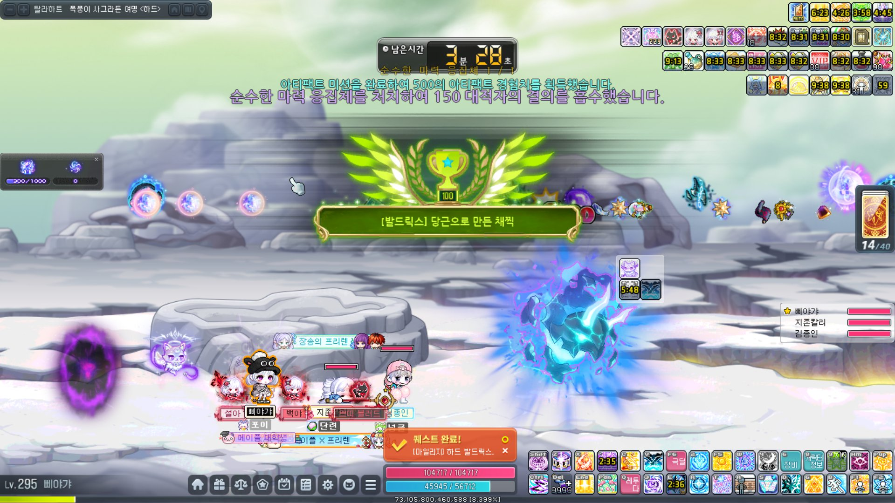
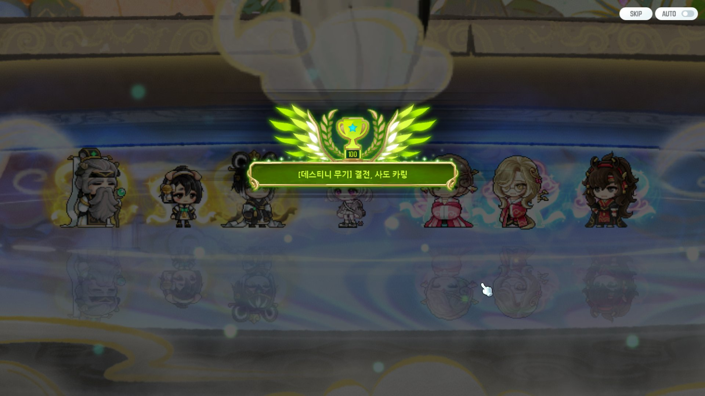
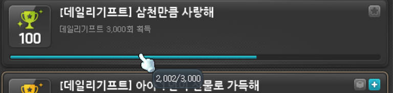
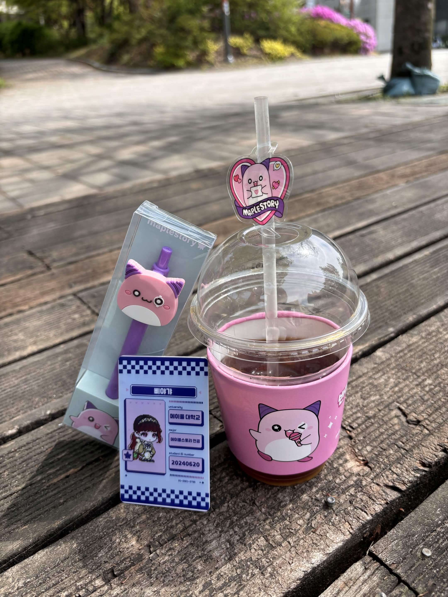
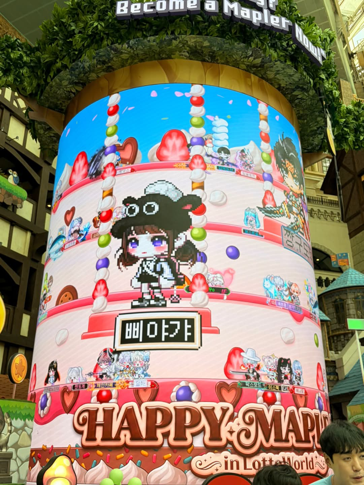
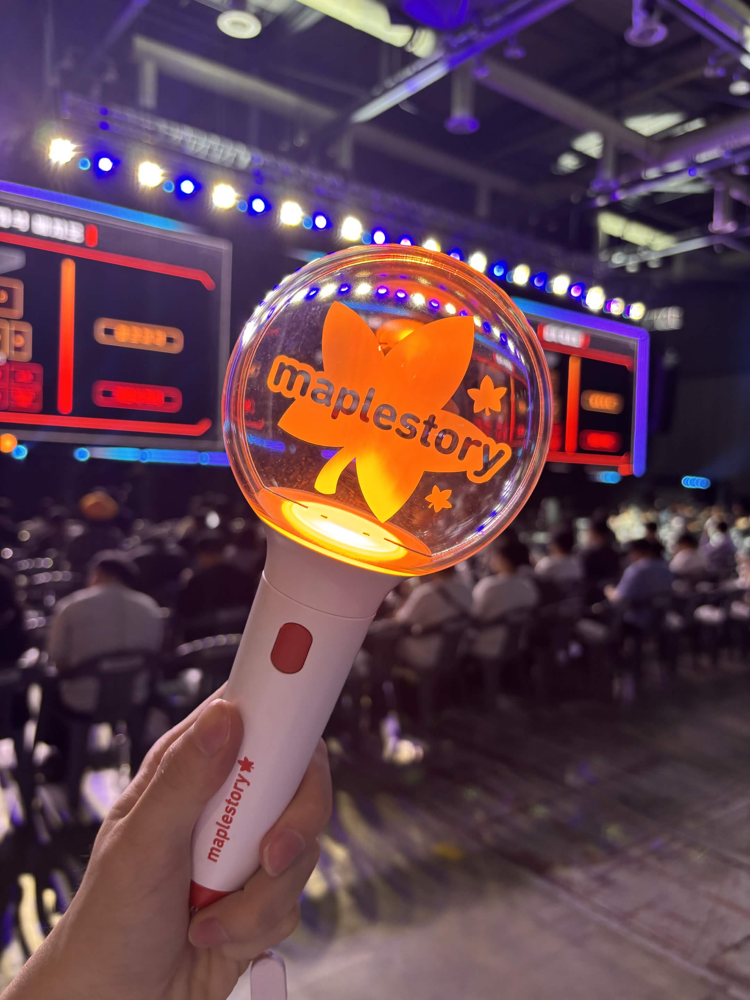

5년의 플레이, 게임 안팎에서 이어온 열정
01게임 안에서, 5년간 이어온 도전과 성장



지속적인 플레이를 통해 엔드 콘텐츠까지 도전해 왔습니다.
02게임 밖에서도 이어지는 열정



다양한 오프라인 행사에도 직접 참여하며 게임에 대한 애정을 이어왔습니다.



지속적인 플레이를 통해 엔드 콘텐츠까지 도전해 왔습니다.



다양한 오프라인 행사에도 직접 참여하며 게임에 대한 애정을 이어왔습니다.